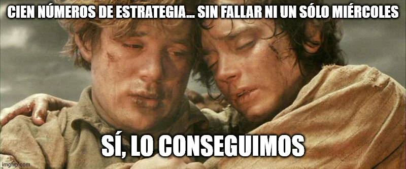

estrategIA #100 ·
Cien miércoles después
El contexto
Sam y Frodo, protagonistas de El señor de los anillos, aparecen agotados tras una larga aventura. La imagen celebra que estrategIA llegó a cien números sin faltar a su cita de cada miércoles. Su alivio sirve para expresar el esfuerzo de mantener esa publicación semanal.
Publicado en: estrategIA #100 — Tras un centenar de ediciones, la IA sigue acelerando y la política se queda atrás
Leer el texto de la imagen
CIEN NÚMEROS DE ESTRATEGIA... SIN FALLAR NI UN SÓLO MIÉRCOLES SÍ, LO CONSEGUIMOS
Marca de la herramienta visible en el original: imgflip.com.